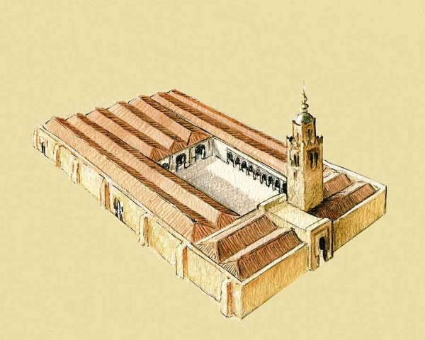

Puertas de acceso, Almedina, Musalla, Mezquita y Aljibes
Con la desintegración del califato, Jayrán se apodera de la ciudad la independiza de Córdoba y la convierte en Reino de Taifa. La ciudad crece y se amplía hacia Levante en una gran extensión: Es el arrabal del Oratorio, “Al- Musalla”. Fuera de la muralla, las necróplis.

Situados juntos en la Puerta de Pechina albergaban las más importantes reservas hidrológicas de la ciudad gracias a una canalización que traía el agua desde las fuenes de Alhadra. Tenían capacidad para 630.000 Litros, suficientes para aquella próspera ciudad del siglo XI. Todo parece indicar que Jairán (1012-1028) inició las obras y las completó Zuhayr.
Un grupo de alumnos de 4 de ESO, 1º y 2º de Bachillerato de nuestro centro, participaron en este evento que se inició aproximadamente a las 10’30 del martes 28 de Abril. La presencia de D. Juan José Tonda Manzano, profesor de Geografía e Historia, toda una autoridad en el tema “Almería Musulmana”, y D. Alfonso Ruíz García, coordinador del Gabinete Pedagógico de la Delegación de Educación de Almería, experto en el tema y autor de varios libros sobre historia de Almería, hacían si cabe mas atractiva esta actividad.
Situada en un extremo de la calle Rueda López a la altura del IES Celia Viñas, conectaba a la ciudad con la Vega y era una de las puertas recaudatoria de la ciudad. Ante ella se extendía uno de los mayores zocos de alimentos, ganado y verduras con los que los campesinos de la vega abastecían a la ciudad; L muralla estaba algo elevada sobre el cauce original de la rambla y la puerta protegida por un saliente con torre. Como dato curioso destacar que la Rambla discurría por la calle Javier Sanz quedando el Celia Viñas extramuros.
Es el centro neurálgico de la ciudad musulmana. Allí se concentraba la Mezquita Mayor, las atarazanas y el zoco. Era el centro religioso y comercial. La fundación de la ciudad en el año 955 por el califa Abderraman III consistió en la construcción de la fortaleza de la Alcazaba y en el amurallamiento del recinto habitado.

Situada en el centro de la Almedina en la actual Iglesia de San Juan. Es una de las muestras más importantes de la arquitectura musulmana después de la Alcazaba. La sala de oración estaba formada por naves perpendiculares al muro de la Quibla y abiertas directamente al patio . Originalmente tenía sólo 3 naves ampliándose más tarde a 7 en el siglo XI. Formaba un espacio de unos 45 metros de ancho, parecida longitud y no más de 7 metros de altura recorrido por las 6 hiladas de columnas que soportan arcos donde descansaban los tejados. La mando construir Abderraman III hacia el año 955 pero se conserva muy poco, sólo parte del muro de la quibla y el Mihrab. Es ampliada posteriormente por jayran en el 1014, pasando a tener la misma 5 naves y prolongándose en los laterales para porticar el patio que seguramente se cerraba con otra nave perpendicular en el lado norte en donde se abria la puerta principal. Las ampliaciones contuinuaran bajo el reinado de zuhayr que da a la mezquita sus dimensiones definitivas, uns 45 metros de ancho por 75 u 80 de largo de los que la mitad corresponden al patio y galerías porticadas que lo cierran.
El centro de Interpretación Puerta de Almería, inaugurado en el año 2006, es un centro que integra parte de la muralla litoral del siglo X perteneciente al núcleo de la Medina y a la época Califal e integra parte de la Puerta que tenía dicho lienzo de muralla: la Puerta del Puerto. También en dicho centro se conserva una pequeña factoría de salazones de época romana.
Almería toma entidad como ciudad (medina) cuando es fundada por Abderramán III en el año 955 (siglo X). Y en dicho centro se hace especial mención al puerto de Almería, que fue uno de los puertos más importantes de Al-Andalus durante los siglos X y XI.
Se trata de los restos de muralla y puerta de acceso a la ciudad desde el mar que cerraba por el este la medina (a la que normalmente se alude como «barrio de la Almedina»), bajando desde la Alcazaba hasta el mar. Lo acompañan los cimientos de la antigua Puerta de las Atarazanas.
Situados juntos en la Puerta de Pechina albergaban las más importantes reservas hidrológicas de la ciudad gracias a una canalización que traía el agua desde las fuenes de Alhadra. Tenían capacidad para 630.000 Litros, suficientes para aquella próspera ciudad del siglo XI. Todo parece indicar que Jairán (1012-1028) inició las obras y las completó Zuhayr.
Se abrió en la muralla del arrabal de la La Musalla durante el reinado de Jaíran en el s. XI, primer soberano de Almería desde entonces hasta 1837 en que fue derribada para que otra la reemplazara, aunque no exactamente en el mismo lugar, la Bab Bayyana, la puerta de Pechina resistió asedios y siglos viendo pasar eras gloriosas y periodos de decadencia.